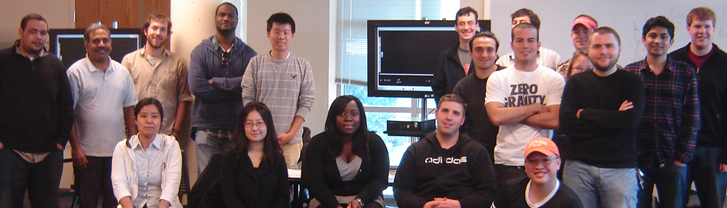

GIS 540
Instructors
Office hours are by appointment. Office hours can be in-person or remote (desktop sharing available via Google Meet or Zoom) | |
Dr. Laura Tateosian, Research Assistant Professor Remote link: GIS 540 Meeting Office Hours: By appointment. (In person or remotely) |
|
Paul Schrum, Teaching Assistant ptschrum@ncsu.edu Office: Jordan Hall 5117 Office Hours: By appointment (In person or Google Hangouts or Zoom) |
|
Alex Lowry, Teaching Assistant aglowry@ncsu.edu Office Hours: By appointment (In person or Google Hangouts or Zoom) |
|
Former GIS540 TAs (a.k.a. rock stars) |
|
| Lana Morris | |
| Elizabeth Robinson | |
| Chris Parker | |
| Yi-Peng Yang (July) | |
| Chelsea Piccone | |
| Matt Dusch | |
| Reza Amindarbari | |
| Angela White | |
| Michelle Glatz | |
| Makiko Shukunobe | |
| Brian McLean | |
| Damian Maddelena | |
| Holly Bracket | |
| Mohamed Awad (Mo) | |
Spring 2011 GIS540 Class  |
|